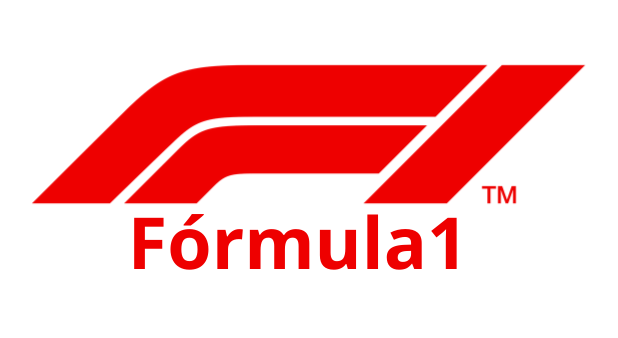
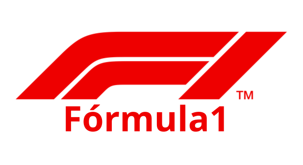

A Conexus, renomada no desenvolvimento de soluções digitais, criou um site inovador para a WorldGame, um gigante no setor de jogos. O novo portal oferece uma interface intuitiva e responsiva, permitindo aos jogadores explorar uma vasta gama de jogos e atualizações com facilidade. Integrando tecnologias avançadas, o site garante uma experiência de usuário fluida e envolvente, com gráficos de alta qualidade e um sistema de recomendação inteligente.
A Conexus, reconhecida por sua expertise em tecnologia, desenvolveu um site inovador para a SoundCrack, uma proeminente empresa de música. A nova plataforma oferece uma navegação fluida e uma interface sofisticada, permitindo aos usuários explorar um extenso catálogo de músicas e playlists com facilidade. Com tecnologia de streaming de ponta, o site assegura uma qualidade de som superior e sugestões personalizadas conforme os interesses dos usuários.
A Conexus, líder em soluções tecnológicas, desenvolveu um site inovador para a Fórmula 1, oferecendo uma experiência digital imersiva e detalhada para os fãs do automobilismo. O novo portal destaca as pistas icônicas de cada Grande Prêmio, com mapas interativos que permitem aos usuários explorar as características únicas de cada circuito, desde as curvas desafiadoras até as áreas de alta velocidade.
A Conexus, especialista em soluções digitais, criou um site excepcional para uma loja de instrumentos musicais, proporcionando uma experiência de compra única para músicos e entusiastas da música. A plataforma apresenta um design intuitivo e moderno, facilitando a navegação entre uma vasta seleção de instrumentos musicais, desde guitarras e pianos até baterias e equipamentos de áudio.
A Conexus desenvolveu um site sofisticado e elegante para a LuxuryMotors, uma referência em veículos esportivos de alto padrão. A nova plataforma oferece uma vitrine digital impressionante com uma seleção exclusiva dos carros esportivos mais desejados das principais marcas internacionais. O site apresenta uma interface de navegação fluida e visualmente atraente, permitindo aos visitantes explorar detalhes abrangentes sobre cada modelo, incluindo especificações técnicas, fotos de alta resolução e vídeos de performance.
.png) 
